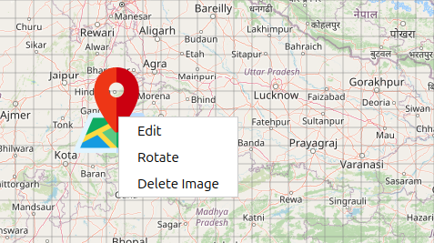

Select Bitmap Image Features User Guide
Select Bitmap Image Icon Overview
The Select Bitmap Image button allows you to upload and place your own custom images on the map, providing complete flexibility for marking locations with company logos, specialized icons, or any visual markers you need.
How to Use Select Bitmap Image
Accessing the Feature
Click the Select Bitmap Image icon on the Design Toolbar
A file selection dialog opens immediately
Navigate to and select your image file
Click Open to place the image
Supported File Formats
PNG (
.png) — Recommended (supports transparency)JPEG/JPG (
.jpeg,.jpg) — Standard photo formats
Placing Custom Images
Automatic Placement
Image is automatically centered on your current map view
No need to click the map — placement is instant
Ideal for precise positioning by adjusting the map beforehand
{kind=link}

Managing Custom Images
Selecting Custom Images
Switch to Move Mode (hand icon)
Click directly on your custom image to select it
Selected images become active for editing
Moving Custom Images
Select image in Move Mode
Click and drag to reposition anywhere on the map
Real-time coordinate tracking during movement
Resizing Custom Images
Right-click the image → Edit
Four resize handles appear at the corners
Drag any handle to adjust size proportionally
The original aspect ratio is preserved automatically
Click outside the image to exit edit mode
Rotation
Right-click the image → Rotate
A rotation handle (yellow circle) appears
Drag the handle to rotate the image to the desired angle
Smooth rotation with visual angle feedback
Perfect for aligning images with map features or roads